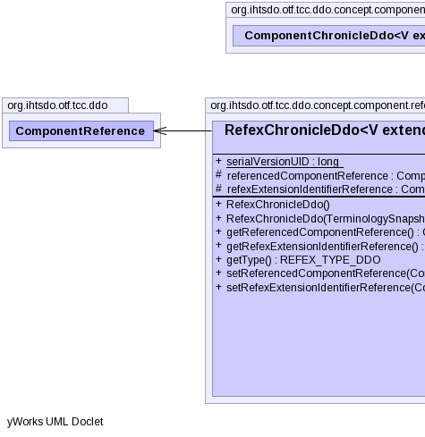

public abstract class RefexChronicleDdo<V extends ComponentVersionDdo,T extends RefexVersionBI> extends ComponentChronicleDdo<V,T>
|  |
| Modifier and Type | Field and Description |
|---|---|
protected ComponentReference |
referencedComponentReference
Field description
|
protected ComponentReference |
refexExtensionIdentifierReference
Field description
|
static long |
serialVersionUID
Field description
|
additionalIds, concept, refexes| Constructor and Description |
|---|
RefexChronicleDdo()
Constructs ...
|
RefexChronicleDdo(TerminologySnapshotDI ss,
ConceptChronicleDdo concept,
RefexVersionBI another)
Constructs ...
|
| Modifier and Type | Method and Description |
|---|---|
ComponentReference |
getReferencedComponentReference()
Method description
|
ComponentReference |
getRefexExtensionIdentifierReference()
Method description
|
abstract REFEX_TYPE_DDO |
getType()
Method description
|
void |
setReferencedComponentReference(ComponentReference componentReference)
Method description
|
void |
setRefexExtensionIdentifierReference(ComponentReference refexRef)
Method description
|
beforeUnmarshal, equals, getAdditionalIds, getComponentNid, getConcept, getIdCount, getPrimordialComponentUuid, getRefexes, getUuids, getVersionCount, getVersions, hashCode, makeVersion, setAdditionalIds, setComponentNid, setPrimordialComponentUuid, setRefexes, setVersions, toStringpublic static final long serialVersionUID
protected ComponentReference referencedComponentReference
protected ComponentReference refexExtensionIdentifierReference
public RefexChronicleDdo()
public RefexChronicleDdo(TerminologySnapshotDI ss, ConceptChronicleDdo concept, RefexVersionBI another) throws IOException, ContradictionException
ss - concept - another - ContradictionExceptionIOExceptionpublic ComponentReference getReferencedComponentReference()
public ComponentReference getRefexExtensionIdentifierReference()
public abstract REFEX_TYPE_DDO getType()
public void setReferencedComponentReference(ComponentReference componentReference)
componentReference - public void setRefexExtensionIdentifierReference(ComponentReference refexRef)
refexRef - Copyright © 2013 International Health Terminology Standards Development Organisation. All rights reserved.